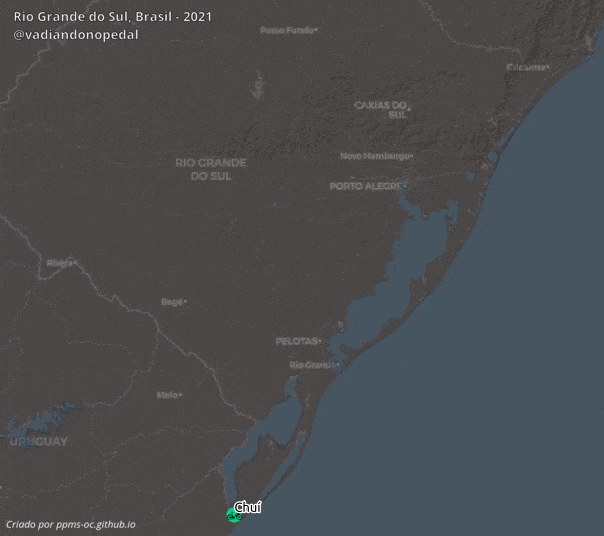

Itinerário de Cicloviagem


Itinerários animados das cicloviagens realizadas pela Carol e pelo Paulo. Casal de cicloviagentes que leva música, arte e alegria por onde passa o seu pedal.
Quer saber por onde eles andam? Acesse o Instagram e o canal do YouTube.
As animações foram criadas no QGIS 3.10 através do plugin TimeManager.